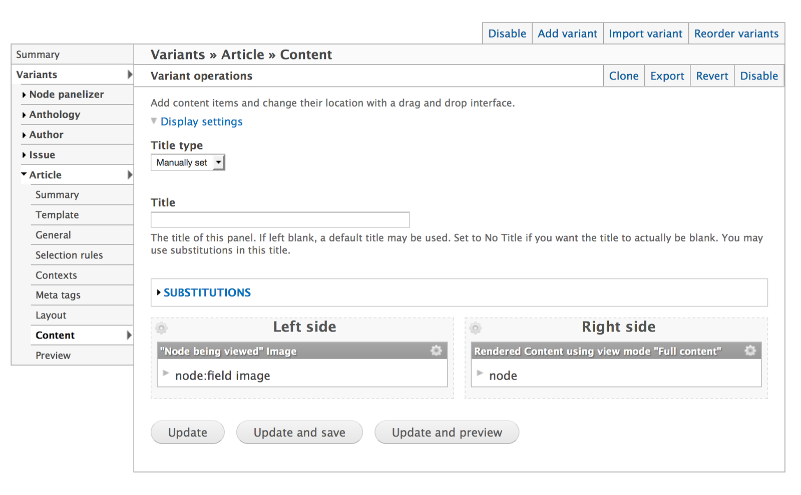
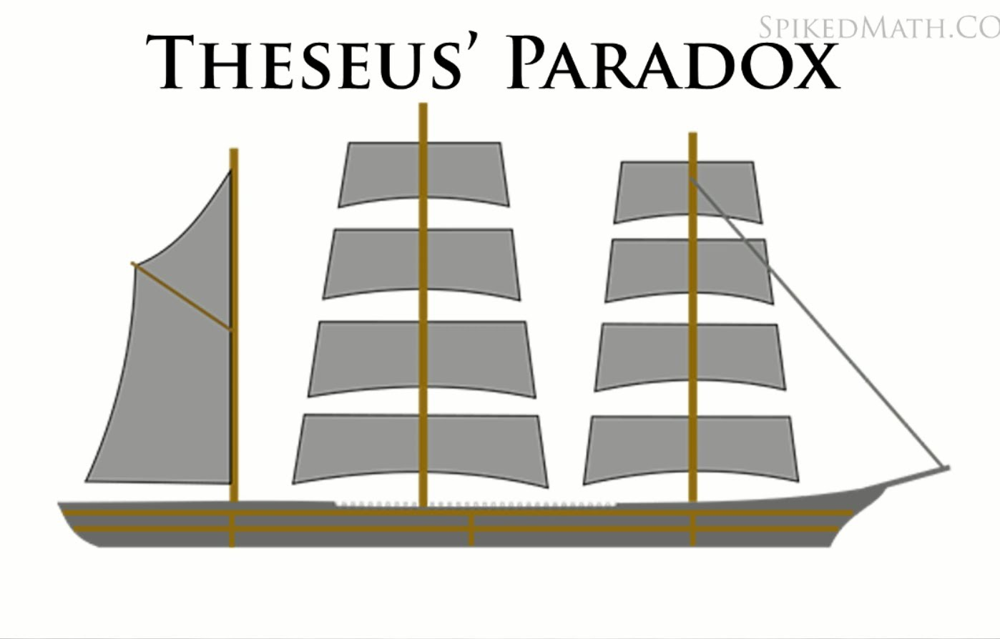
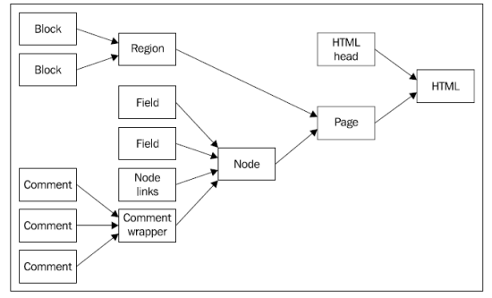
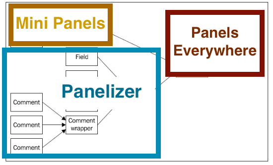
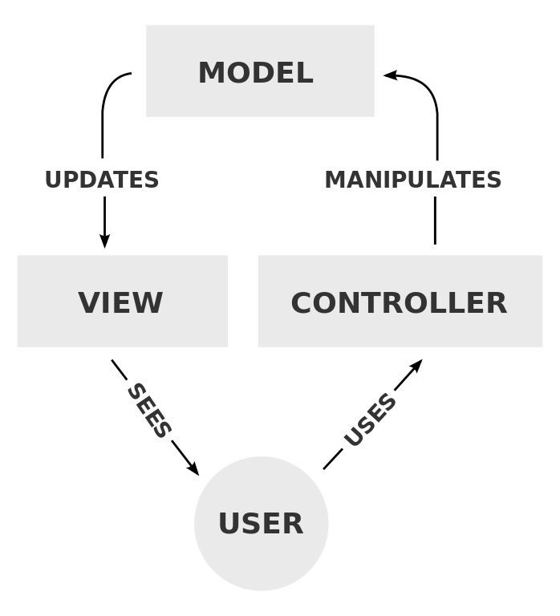
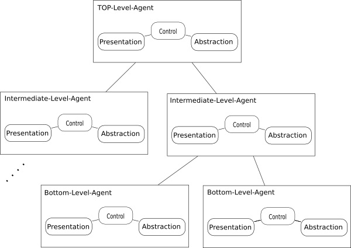
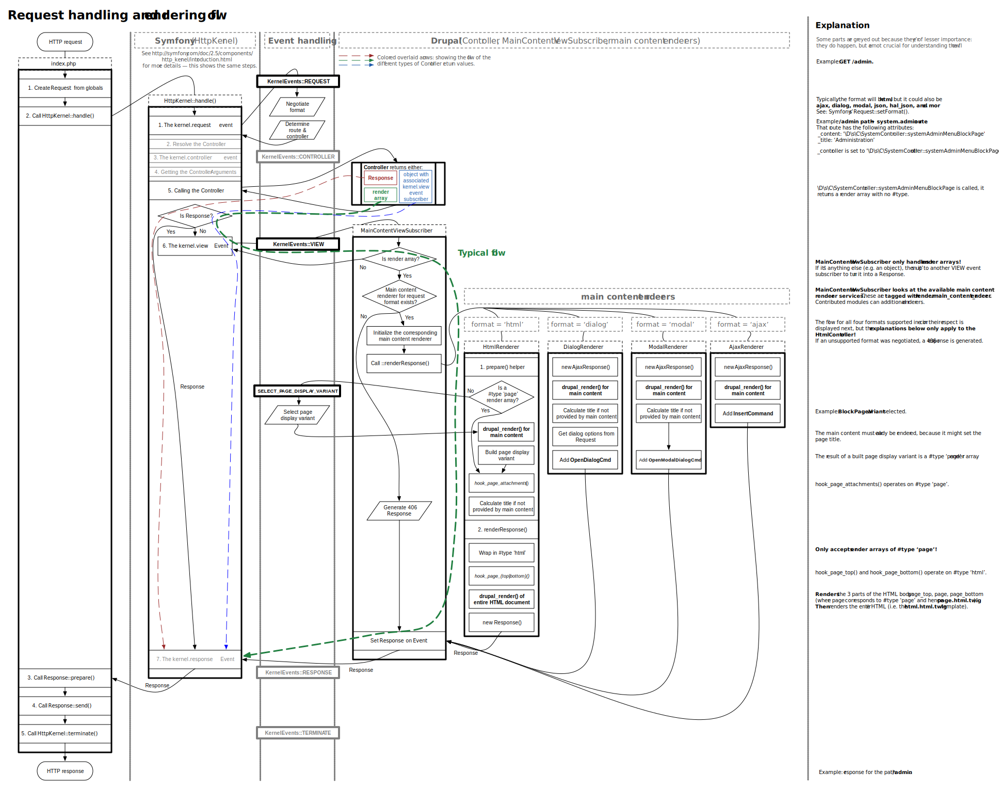
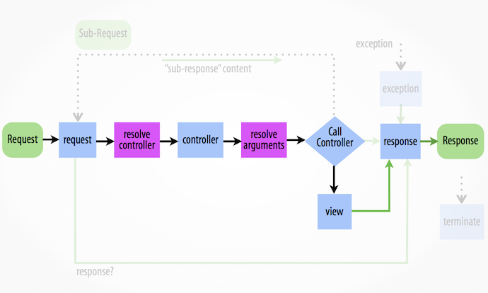

What Panels can Teach us About Web Components
Presented by Steve Persch (@stevector)
Steve Persch
Senior Engineer and Team Lead at Palantir.net
@stevector on Twitter
Defining the terms
What are
Web Components?
...a W3C specification that allow for the creation of reusable widgets or components in web documents and web applications.
http://en.wikipedia.org/wiki/Web_Components
An (extremely) abbreviated history of HTML
Before HTML5
The Select Element
HTML5
After HTML5:
Web Components
Separating the definition of an element from the usage
| Lots of code defines the element | Very little to invoke |
dist/
├── layout.html
├── platform.js
├── polymer.html
├── polymer.js
├── polymer.js.map
├── x-gif.angular.js
├── x-gif.css
├── x-gif.html
├── x-gif.js
└── x-gif.local.html
|
|
Proof of Concept in Drupal
< ? php print $front; ?>
< ?php print $back; ?>
What is Panels?
Panels is a user interface for theme()
But let's forget about the UI for a minute
Panels is a way to take data (Context)
stdClass Object
(
[vid] => 1
[uid] => 1
[title] => This is an Article
[log] =>
[status] => 1
[comment] => 0
[promote] => 1
[sticky] => 0
[nid] => 1
[type] => article
[language] => und
[created] => 1431529567
[changed] => 1431529567
[tnid] => 0
[translate] => 0
[revision_timestamp] => 1431529567
[revision_uid] => 1
[body] => Array
(
[und] => Array
(
[0] => Array
(
[value] => With a Body field!
[summary] =>
[format] => plain_text
[safe_value] => With a Body field!
[safe_summary] =>
)
)
)
[name] => admin
[picture] => 0
[data] => b:0;
[entity_view_prepared] => 1
And get it ready for printing in a template
< ?php print $content['left']; ?>
< ?php print $content['right']; ?>
By passing the data through user defined configuration
$handler = new stdClass();
$handler->disabled = FALSE; /* Edit this to true to make a default handler disabled initially */
$handler->api_version = 1;
$handler->name = 'node_view_panel_context';
$handler->task = 'node_view';
$handler->subtask = '';
$handler->handler = 'panel_context';
$handler->weight = 1;
$handler->conf = array(
'title' => 'Person',
'no_blocks' => 0,
'pipeline' => 'standard',
'body_classes_to_remove' => '',
'body_classes_to_add' => '',
'css_id' => '',
'css' => '',
'contexts' => array(),
'relationships' => array(),
'access' => array(
'logic' => 'and',
'plugins' => array(
0 => array(
'name' => 'node_type',
'settings' => array(
'type' => array(
'person' => 'person',
),
),
'context' => 'argument_entity_id:node_1',
'not' => FALSE,
),
),
),
);
$display = new panels_display();
$display->layout = 'onecol';
$display->layout_settings = array();
$display->panel_settings = array(
'style_settings' => array(
'default' => NULL,
'middle' => NULL,
),
);
$display->cache = array();
$display->title = '%node:title';
$display->content = array();
$display->panels = array();
$pane = new stdClass();
$pane->pid = 'new-1';
$pane->panel = 'middle';
$pane->type = 'custom';
$pane->subtype = 'custom';
$pane->shown = TRUE;
$pane->access = array(
'plugins' => array(
0 => array(
'name' => 'entity_field_value:node:person:field_ref_term_designation',
'settings' => array(
'field_ref_term_designation' => array(
'und' => array(
0 => array(
'tid' => '73',
),
),
),
'field_ref_term_designation_tid' => array(
73 => '73',
1 => NULL,
2 => NULL,
3 => NULL,
72 => NULL,
),
),
'context' => 'argument_entity_id:node_1',
'not' => FALSE,
),
),
);
$pane->configuration = array(
'admin_title' => 'Honorary Member',
'title' => '',
'body' => 'Honorary Member
',
'format' => 'full_html',
'substitute' => 0,
);
$pane->cache = array();
$pane->style = array(
'settings' => NULL,
);
$pane->css = array();
$pane->extras = array();
$pane->position = 0;
$pane->locks = array();
$display->content['new-1'] = $pane;
$display->panels['middle'][0] = 'new-1';
$pane = new stdClass();
$pane->pid = 'new-2';
$pane->panel = 'middle';
$pane->type = 'node_content';
$pane->subtype = 'node_content';
$pane->shown = TRUE;
$pane->access = array();
$pane->configuration = array(
'links' => 0,
'no_extras' => 0,
'override_title' => 1,
'override_title_text' => '',
'identifier' => '',
'link' => 0,
'leave_node_title' => 0,
'build_mode' => 'full',
'context' => 'argument_entity_id:node_1',
);
$pane->cache = array();
$pane->style = array(
'settings' => NULL,
);
$pane->css = array();
$pane->extras = array();
$pane->position = 1;
$pane->locks = array();
$display->content['new-2'] = $pane;
$display->panels['middle'][1] = 'new-2';
$pane = new stdClass();
$pane->pid = 'new-3';
$pane->panel = 'middle';
$pane->type = 'views_panes';
$pane->subtype = 'videos_by_person-panel_pane_1';
$pane->shown = TRUE;
$pane->access = array();
$pane->configuration = array(
'more_link' => 1,
'use_pager' => 0,
'pager_id' => '0',
'items_per_page' => '3',
'path' => 'node/%/videos',
'context' => array(
0 => 'argument_entity_id:node_1',
),
'override_title' => 1,
'override_title_text' => 'Videos featuring %node:title',
);
$pane->cache = array();
$pane->style = array(
'settings' => NULL,
);
$pane->css = array();
$pane->extras = array();
$pane->position = 2;
$pane->locks = array();
$display->content['new-3'] = $pane;
$display->panels['middle'][2] = 'new-3';
$pane = new stdClass();
$pane->pid = 'new-4';
$pane->panel = 'middle';
$pane->type = 'views_panes';
$pane->subtype = 'clips_by_person-panel_pane_1';
$pane->shown = TRUE;
$pane->access = array();
$pane->configuration = array(
'more_link' => 1,
'use_pager' => 0,
'pager_id' => '0',
'items_per_page' => '3',
'path' => 'node/%/clips',
'context' => array(
0 => 'argument_entity_id:node_1',
),
'override_title' => 1,
'override_title_text' => 'Podcast clips featuring %node:title',
);
$pane->cache = array();
$pane->style = array(
'settings' => NULL,
);
$pane->css = array();
$pane->extras = array();
$pane->position = 3;
$pane->locks = array();
$display->content['new-4'] = $pane;
$display->panels['middle'][3] = 'new-4';
$display->hide_title = PANELS_TITLE_FIXED;
$display->title_pane = '0';
$handler->conf['display'] = $display;
Overly-simplified Panels Pseudo-code
function render_a_panel($nodes_or_other_data, $name_of_panels_config) {
// Each Panels layout plugin becomes a theme hook.
$name_of_theme_hook = $this->get_theme_hook_name($name_of_panels_config);
// Panels stringifies render arrays before passing to theme().
$printable_vars = $this->get_printable_vars($nodes_or_other_data, $name_of_panels_config);
// Dead simple insertion of variables into a template.
return theme($name_of_theme_hook, $printable_vars);
}
Panels can operate on multiple levels
- Panels Everywhere for the
page.tpl.phplevel - Page Manager for the
hook_menu()level - Panelizer for View Modes
- Mini Panels for Block level
Why should we care about Web Components* ?
- Or Angular
- React
- Ember
- Backbone + Marionette
- Riot
- Knockout
- Whatever was released during this session
The ability to componentize and reuse is a measure of progress
The way to be more productive is to write less code.
The way to be more productive is to reuse more code.
The way to be more productive is to share more code.
Larry "Crell" Garfield
What caused the PHP Renaissance?
- Class autoloading
- Github
- Namespaces
- The PHP Standards Group
- Composer
- Common Interfaces
What do we have to show for it?
vendor/
├── autoload.php
├── behat
├── bin
├── composer
├── doctrine
├── easyrdf
├── egulias
├── fabpot
├── guzzlehttp
├── masterminds
├── mikey179
├── phpunit
├── psr
├── react
├── sdboyer
├── sebastian
├── symfony
├── symfony-cmf
├── twig
└── zendframework
And we're doing well on the front end
assets/vendor/
├── backbone
├── ckeditor
├── classList
├── domready
├── farbtastic
├── html5shiv
├── jquery
├── jquery-form
├── jquery-joyride
├── jquery-once
├── jquery-ui-touch-punch
├── jquery.cookie
├── jquery.ui
├── matchMedia
├── modernizr
├── normalize-css
├── picturefill
└── underscore
We are playing out the Ship of Theseus thought experiment
In our markup, can we
- write less?
- Yes (Thanks Twig!)
- reuse more?
- Yes (Stay for John's Core Conversation)
- Share more?
- With the outside world?
The Dependency Injection Container bridges between 3rd-party interfaces and Drupal's internals
a Dependency Injection Container (DIC) is simply an easier place to wire up what objects get passed to what objects.
Larry "Crell" Garfield
Panels does analogous wiring for Markup between source data and templates
To use Web Components properly, we will need to bridge data and display without strong coupling
Lessons from Panels
Lesson: Not all theme hooks require equal attention
Drupal 7 theming:
One of the things that makes Drupal theming so powerful is its granularity. Each piece of content is handled separately as it's passed through the theming system. Each bit of data is themed individually, then combined into ever-larger chunks. At each step in the aggregation process, it's themed again.
John Albin Wikins in Drupal 7 module development
(Packt Publishing)
With great power comes great responsibility
Where to start customizing Drupal markup?

John Albin Wikins in Drupal 7 module development
(Packt Publishing)
Panels priortizes some layers
Lesson: “A good architecture allows you to defer critical decisions”
Lesson: Separate names indicate separation of concerns
The name of the template matches the name of the internal data
What is the name of the template used by article node teasers?
node--article--teaser.tpl.php
Panelizer gives you the option to make the article teaser's template be
the-design-component-name.tpl.php
Lesson: Simple mental models help
The modern front end world has its patterns of choice
Model View Controller
Model View Presenter

Wikipedia
Used by riot.js and Backbone (kind of)
Model View ViewModel

Wikipedia
Used by Knockout.js
Presentation Abstraction Control

Wikipedia
Used by Drupal?
Drupal Drupal Drupal

D8 Render Pipeline
Symfony HTTP Kernel
The time browsers take to process Web Components is nothing compared to that which brains take to understand them.
Lesson: Nesting is hard

Lesson: Define dependencies / properties
$plugin = array(
'title' => t('Three column 33/34/33 stacked'),
'category' => t('Columns: 3'),
'icon' => 'threecol_33_34_33_stacked.png',
'theme' => 'panels_threecol_33_34_33_stacked',
'css' => 'threecol_33_34_33_stacked.css',
'regions' => array(
'top' => t('Top'),
'left' => t('Left side'),
'middle' => t('Middle column'),
'right' => t('Right side'),
'bottom' => t('Bottom')
),
);
As the Drupal community asks itself again
how it wants to do rendering, let's also ask
"how do we want to think about rendering?
Questions for conversation
- Can we separate the thing that prints data at all from the thing that says how it gets printed?
- Is sharing our markup outside of Drupal something we even want to do?
- Does someone need to write a Web Component theme?
- How many Invented-Here parts of Drupal can we strip and still be Drupal?
- Which pattern do you see Drupal implementing now? (MVC, PAC, ADR)
- Which pattern do you want Drupal to use?
- Which part of the D8 render pipeline do you expect to think about most?